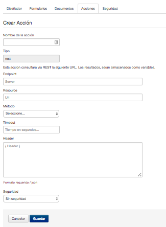
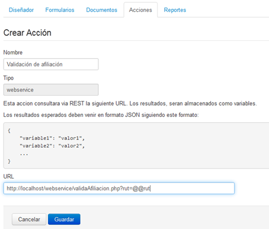
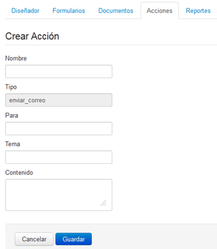

2.3.3 Acciones del proceso
Las acciones permiten realizar eventos especiales al iniciar o finalizar una tarea del modelo de procesos, en la actualidad existen dos acciones predefinidas que se pueden utilizar al modelar el proceso, siendo el envío de correos y la consulta hacia un WebService.
Para ingresar al menú de acciones simplemente haga clic sobre la pestaña Acciones. Como se indica en la imagen siguiente:

Figura 32: "Ventana de Gestión de Acciones"
Con lo anterior se abrirá el marco de trabajo para gestionar las acciones, permitiendo realizar las opciones típicas de un mantenedor, siendo las siguientes:
- Botón Nuevo :
- Permite añadir una acción al modelo de proceso que se encuentra trabajando, en la actualidad existen sólo dos acciones disponibles, siendo el envío de correos y la llamada hacia un WebService. Al presionar sobre el botón se abrirá una ventana que le permitirá indicar que acción desea realizar, como se ve en la imagen siguiente:

Figura 33: "Nueva acción"
Acción WebService
De seleccionar Consultar WebService, se desplegará la siguiente imagen:

Figura 34: "Ventana para generación de Acción"
En donde:
- Campo Nombre: Corresponde al nombre de la acción a generar.
- Campo URL: Corresponde a la dirección del WebService que se desea consultar/ejecutar. Considere que mediante la URL indicada también podrá le podrá pasar valores por parámetro al WebService. Por ejemplo, si usted desea pasar la variable Rut como parámetro, debe escribir la URL de la siguiente forma:
http://servidorweb/webservice/webservice.php?rut=@@rut
Tenga presente, que el WebService DEBE OBLIGATORIAMENTE responder con formato JSON y aceptar consultas vía REST, siendo la salida obligatoria, con la siguiente estructura:
{
"variable1": "valor1",
"variable2": "valor2",
...
}
Las variables de respuesta, podrán ser utilizadas anteponiendo @@, por ejemplo, al utilizar la variable @@variable2 informará lo que se devuelva como valor2.
Para mayor información sobre el WebService que desea utilizar, acérquese al área de IT a consultar.
Dado que nos encontramos realizando un ejemplo para la entrega de Cupón de Pago para Afiliados a CPA, uno de los WebService a requerir es para Validar la Afiliación, que nos retorne mediante el Rut si el usuario está afiliado o no. Por lo que la llamada al WebService quedaría de la siguiente forma:

Figura 35: "Generación de Acción WebService - Ejemplo Valida Afiliación"
Para finalizar simplemente presione Guardar.
Acción Correo Electrónico
Por otro lado, si selecciona correo electrónico, se desplegará la siguiente ventana, en la cual simplemente debe completar los datos requeridos:

Figura 36: "Generación nueva acción para Correo Electrónico"
En donde:
- Campo Nombre: Corresponde al nombre de la acción a generar.
- Campo Tipo: es informativo, para que el usuario que tipo de acción está generando.
- Campo Para: indica el destinatario del correo electrónico, pude ser más de uno separado por coma “,” o indicar una variable por parámetro.
- Campo tema: corresponde al asunto del correo electrónico.
- Campo Contenido: es el contenido del correo electrónico.
- Campo Adjunto: Permite adjuntar documentos utilizando variables. Puede ser más de uno separados por coma ",".
- Botón Editar :
- Permite modificar las propiedades de la acción seleccionada, no es posible modificar el tipo de acción seleccionada.
- Botón Eliminar :
- Permite eliminar una acción definida. Recuerde que la acción de eliminar no es reversible, además siempre debe revisar que su modelo no esté utilizando la acción a eliminar antes de eliminarla.
Acción Generar Variable
Por otro lado, si selecciona generar variable se desplegará la siguiente ventana, en la cual simplemente debe completar los datos requeridos:

Figura 37: "Generación nueva acción para Crear Variable"
En donde:
- Campo Nombre de la acción: Corresponde al nombre de la acción a generar.
- Campo Tipo: es informativo, para que el usuario que tipo de acción está generando.
- Campo Variable: Corresponde al nombre de la variable
- Campo Expresión a Evaluar: Corresponde a la expresion regular a evaluar, como por ejemplo se pueden obtener la id del cliente, o realizar calculos entre distintos datos.
- Botón Editar :
- Permite modificar las propiedades de la acción seleccionada, no es posible modificar el tipo de acción seleccionada.
- Botón Eliminar :
- Permite eliminar una acción definida. Recuerde que la acción de eliminar no es reversible, además siempre debe revisar que su modelo no esté utilizando la acción a eliminar antes de eliminarla.
- Generación de Variables, para visualizar en Bandeja de Entrada, Participados y Seguimientos:
Para visualizar la Referencia y Descripción del Trámite en la Bandeja de Entrada, a su vez en Hístorico y Seguimiento se deben de seguir los siguientes pasos,
1) En la pestaña Formularios, crear dos campos, con referencia al Nro. de Mesa de Entrada y Descripción del Trámite.
2) Ir a la pestaña de Acción, y generar dos variables, con nombre tramite_ref y tramite_descripcion , la misma debe ser generada univocamente como se encuentra descripta.
3) Asociar los campos a las variables anteriores.
Ejemplo.
- Campo Etiqueta, Nro. Mesa de Entrada, y name txt_nro_mesa_entrada, asociar a la variable tramite_ref.
- Campo Etiqueda, Descrpcion, y name txt_desc_mesa_entrada, asociar a la variable tramite_descripcion.
5) Una vez realizado el mismo, ir a la pestaña Eventos y agregar las variables en modo "Despues" de ejecutar la tarea, para poder asignar los campos creados a las variables generadas.
A modo de dar continuidad con lo mencionado anteriormente, podemos visualizar un pequeño anexo a tener en cuenta:
Creación de dos campos.

Creación de dos variables (Nro. de Mesa de Entrada, y Descripción del Trámite).

Detalle de la variable (descripcion del tramite).

Detalle de la variable (numero de mesa de entrada).

Proceso

Edición de la Tarea 1
*Pestaña Pasos:

*Pestaña Eventos:

Finalmente Iniciar un Trámite

Visualización previa en la Bandeja de Entrada

Para confirmar, presionamos el botón "Finalizar"

Visualización en Histórico de Trámites

Visualización en Seguimiento